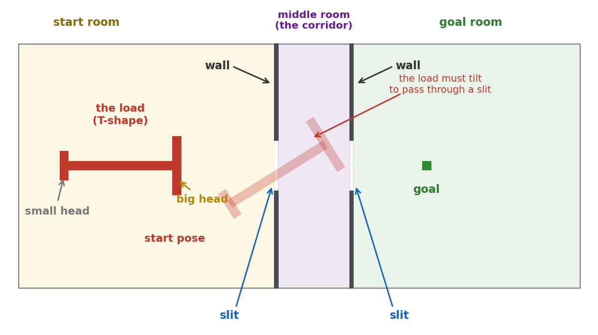
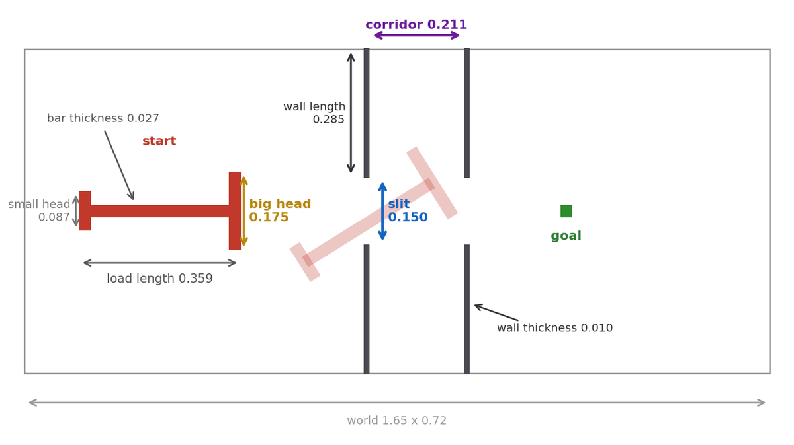
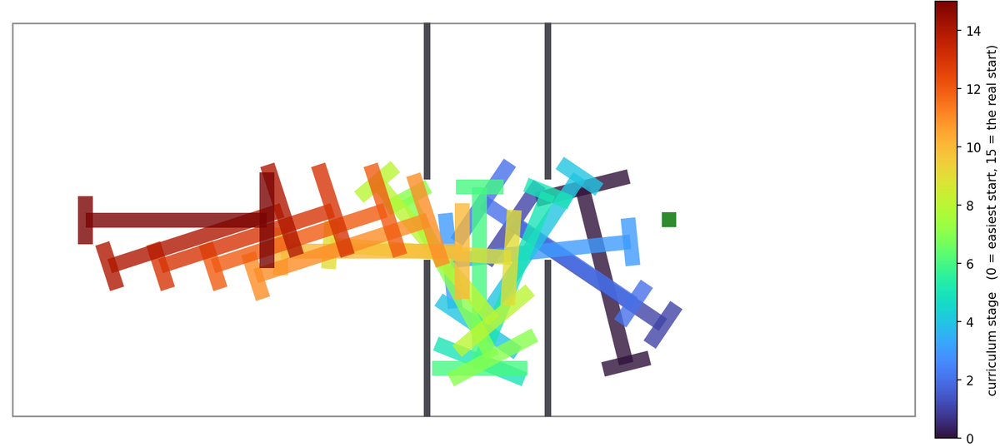

Reinforcement learning · piano-movers problem
Can an AI agent solve the puzzle that ants solve?
A group of ants carries a T-shaped load through two narrow slits, with no leader and no plan. I rebuilt their maze as a gym environment and spent a few weekends trying to teach one agent the same maneuver. It failed for a long time. This is what finally worked.
01The ants
I'm sure many of you have seen this video, showing a group of ants carrying a T-shaped load through a box.
It is amazing to see how a few milligrams of insect, with no leader and no plan, solve a motion-planning problem that we teach in robotics courses.
So I asked myself: can AI agents do the same?
There might already be some works implementing this task. I did not even search about it, because I wanted to do it myself — I was sure I would learn a lot along the way.
02The environment
So I rebuilt the maze as a gym environment, to see if RL agents can learn the same maneuver or not.
The real system is multi-agent, and that is where this task gets even more interesting, because the research behind this video [Dreyer et al., PNAS 2025] shows that ants get better in bigger groups. People get worse!
However, I started with a single agent, which should be easier for RL.
The environment is a small 2-D rigid-body simulator in pure NumPy, with exact rectangle collisions.

A single agent either moves the load directly (kinematic) or pushes it with real forces and momentum (dynamic, the mode closest to the ants).
03Try it yourself
If you want to try how this env works, I also built a simple but interactive version of it, running right here:
Feeling the maze by hand is the fastest way to understand why an agent struggles with it.
04Now let's see how the env components are defined
Observation
Instead of giving the agent an image of the maze, I took the observation simple, as a collection of features — 25 numbers in total:
| Block | Count | Meaning |
|---|---|---|
| Attachment offset | 2 | where this ant holds the load |
| Load position | 2 | where the T is |
| Goal vector | 2 | from the load to the goal |
| Orientation | 2 | sin θ, cos θ |
| Angular velocity | 1 | how fast it spins |
| Tip → slit-corner distances | 16 | 4 arm tips × 4 slit corners |
The last block matters. Without it the agent has no idea where the walls are, so it cannot know that it is about to hit one. And I did not want an image, because then the agent would first have to learn to see. The hard part here is not seeing, it is control.
Action
I implemented two versions. In kinematic mode the action is two numbers: a direction to move in, and how much to rotate.
action = [ direction in [-pi, pi], rotation in [-1, 1] ]
Each step the load moves 0.01 along direction and turns
0.1 * rotation. There is no mass and no momentum — the
load simply moves.
In dynamic mode the agent pushes instead:
action per ant = [ push angle, magnitude ] (+ spin, for a single agent)Having physics is even more interesting, and much closer to the ants: the load has mass, it drifts, it overshoots. (The spin is there because a single agent sits in the middle of the load, and pushing from the middle can never turn it.)
| Physics | Value |
|---|---|
| Mass | 0.5 |
| Moment of inertia | 0.01 |
| Linear friction | 0.96 |
| Angular friction | 0.94 |
| Substeps per env step | 10 |
Reward
For now I kept it as simple as possible: +1 when the load reaches the goal, and 0 everywhere else. Nothing for getting closer, nothing for trying. An episode ends after 500 steps if the agent did not make it.
05The agent
For the RL agent I picked two algorithms: PPO, which is on-policy, and SAC, which is off-policy. I wanted to see both.
The network is as simple as it gets: an MLP. Both algorithms are actor-critic, so one part picks the action and another part judges it. They are two separate small networks: PPO uses 64x64 for each, SAC uses 256x256. (SAC actually keeps two critics instead of one.)
Nothing special. No vision, no memory. If this task turns out to be hard, it should not be because of the model.
06Experiment 1: make it easy first
My first idea was the obvious one: start with a wide slit, and make it narrower step by step as the agent gets better.
It worked. The agent passed every stage and reached the real narrow width.
Then I looked at what it actually does:
It never does the maneuver. It slides the load through sideways, small head first. The small head fits everywhere, so that is what the agent learned in the wide stages — and it kept doing it. My reward did not complain, because I only asked for the centre of the load to reach the goal.
So by widening the slit I did not make the task easier. I made it a different task, with a solution the real task does not have.
07Experiment 2: narrow slit, and ask for the big head
I narrowed the slit to make the task harder. And to encourage the agent to go with the big head, I changed what counts as success: now the big head has to arrive at the goal, not the place where the agent sits.
Now the agent has to do the real maneuver. But both PPO and SAC failed to learn the task:
| Run | Steps | Success |
|---|---|---|
| PPO dynamic, sparse reward | 13.21M | 0% |
| SAC dynamic, sparse reward | 2.94M | 0% |
Why did it fail?
My first guess was the sparse reward. The agent is only paid when it finishes. Before that, every state looks the same: reward 0. There is nothing to climb, so there is nothing to learn from.
So I added a shaped reward: a small reward for every step that brings the load closer to the goal. Now there is a signal everywhere, not only at the end.
It failed again:
| Run | Steps | Success |
|---|---|---|
| PPO dynamic, shaped reward | 14.06M | 0% |
After 14 million steps it has learned exactly one thing: drive at the goal. It pushes the load against the wall and waits there until the episode ends.
So the sparse reward was not the whole story. My second guess: the space of solutions is too tiny. In most positions and angles the load would simply overlap a wall, so they are impossible. And to pass a slit, the load has to be in the right place and at the right angle at the same time — very few combinations do that. How tight is it? If I make the walls 3 mm thicker, the maze has no solution at all. Random exploration does not find something like this.
08Experiment 3: a curriculum
If the agent cannot find the solution by itself, it has to practise. It needs a curriculum.
The two simple ways to build a curriculum are:
1. Widen the slit and narrow it step by step. But in Experiment 1 we saw that this teaches the agent to cheat.
2. Cut the task into pieces. Let it first learn to reach the goal from inside the goal room. Then from inside the corridor. Then from around the real start. And finally stitch the pieces together, so it can do the whole thing.
The maze never changes here — only where the episode begins:
Then I ran SAC, and it was successful.
But when I looked closely, it was still cheating.
My first thought was that my arena was to blame — I had drawn it by hand, not from the paper. So I rebuilt the maze with the real numbers:

It did not help. In the new maze the agent went in small head first again — all 20 solutions I checked.
Two things were wrong. My slit is still a bit too generous — in the paper it is 0.81 of the big head, in mine 0.86 — so this shortcut stays open. And my curriculum dropped the load at a random place and a random angle, so nothing ever asked it to reach the slit with the big head in front.
The stages were mine. They were not taken from a real solution of the maze.
09Experiment 4: give the agent a teacher
At this point the agent had two problems. It did not know which moves were real progress, and my curriculum did not know which starting poses were useful.
So I decided to give it a teacher. Not a teacher that tells it exactly what action to take, but one that already knows a real route through the maze.
For that, I needed a map of every situation the load can be in. Here a "situation" is not only its position. Its angle matters too: the load can fit at one angle and hit a wall at another, even when its centre is in the same place. So each point on this map is a full pose: x, y, and angle.
Then I used BFS, or breadth-first search. You can think of it as flooding this map backwards from the goal. The flood can move from one pose to another only when that small move is legal and does not cross a wall.
When the flood is finished, every reachable pose has a number. The number says how many small legal moves are left before the goal. A pose with distance 100 is closer than one with distance 101, even if the straight-line distance says otherwise.
This one map gave me both things I was missing.
A better reward
My old reward used the straight-line distance to the goal. But the straight line goes through the walls. That is why the agent was rewarded for pushing against a wall. It was also punished for turning away from the goal, even though that turn is exactly what solves the maze.
The BFS number does not have this problem, because it counts the moves along the real route. So the new reward is simple: the agent gains when the number goes down, and loses when it goes up. Turning the load to line it up with the slit brings the number down, so turning now pays. Pushing the small head into the dead end sends it up, so the dead end costs.
Better starting poses
BFS also gives me a valid path from the start to the goal. I picked 16 poses along that path and used them as the curriculum stages.

Read the colours from dark blue to dark red. Stage 0 is almost at the goal, and stage 15 is the real start. In other words, the picture shows the solution backwards, including the important turn between the two slits.
The agent learns it in the same order: first the last piece, then the piece before it, and so on. It moves to the next stage only when it reaches 90% success on the current one. A stage is never skipped just because it is taking too long.
10Two last fixes, and the result
With the teacher in place I moved to the hard mode: dynamic, with real forces and momentum. Two more things were needed there.
Do not forget the rare win. SAC learns from a big pool of past experience. Wins through the slit are rare, so they drown in that pool and get forgotten. So I keep successful episodes in a second pool, and force 25% of every training batch to come from it.
Let the agent feel its own speed. With momentum the load drifts and overshoots, but my observation only had position and angle — not speed. That is like driving while you can see where you are, but not how fast you are moving. Adding the velocity took the observation from 25 numbers to 27.
100% success in 247,519 steps about two hours on one machine, and 56 times fewer steps than the 14-million-step run that learned nothing.
But the number I actually cared about was not the success rate. It was how it solves the maze. So I replayed the last 25 solutions and checked which head goes through each slit first:
slit 1 entered first by : BIG head 25 / 25
slit 2 exited first by : small head 25 / 25Every single one. Big head into the first slit, turn in the corridor, small head out of the second — the same maneuver as the ants, in real physics, with no shortcuts.
11What is next
One agent can now do it. But one agent is not what the ants do.
The next step is many agents on the same load. Each one pushes at its own point, sees only its own local view, and feels the others only through the load it is holding. No leader, no plan, no messages — the same setting the ants are in. That is the part I am really curious about: whether a group can find this maneuver together, and whether it gets better with more agents, as the ants do and people do not.
There is also plenty left to improve in what already exists. My slit is still a bit wider than the paper's. The teacher is a strong crutch — I would like to see how far one can get with a weaker one. And I only ran the teacher setup with SAC, never with PPO.
Come and play with it
The code is on GitHub, and it is open:
It is a normal gym environment, so you can drop your own algorithm on it in a few lines. Everything in this post — the maze, the configs, the curriculum, the BFS teacher — is in there, and the browser sandbox needs no install at all.
If you find a better way, break something, or make the agent cheat in a way I did not think of, I would love to hear about it. Open an issue, send a pull request, or just write to me. And if you work on collective behaviour or multi-agent RL and this is close to your area, please get in touch — I would enjoy the conversation.
Cite this post
If this environment or write-up is useful in your work, you can cite it as a blog post:
@misc{kakooee2026antswarm,
author = {Kakooee, Reza},
title = {Can an {AI} Agent Solve the Puzzle That Ants Solve?},
year = {2026},
howpublished = {\url{https://rezakakooee.github.io/ant-piano-movers-rl/}},
note = {Blog post. Code: \url{https://github.com/RezaKakooee/ant-piano-movers-rl}}
}Or in plain text:
Kakooee, R. (2026). Can an AI agent solve the puzzle that ants solve? Blog post. https://rezakakooee.github.io/ant-piano-movers-rl/
Please also cite the experiment this work reproduces:
@article{dreyer2025ants,
author = {Dreyer, Tabea and Haluts, Amir and Korman, Amos and
Gov, Nir and Fonio, Ehud and Feinerman, Ofer},
title = {Comparing cooperative geometric puzzle solving in ants versus humans},
journal = {Proceedings of the National Academy of Sciences},
year = {2025},
doi = {10.1073/pnas.2414274121}
}